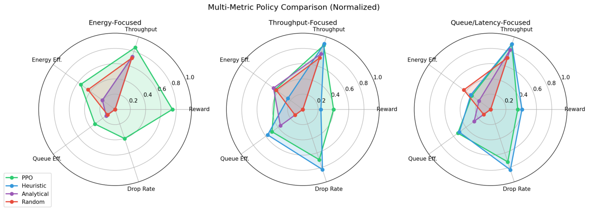

Deep-RL Target Wake Time Scheduling for IEEE 802.11ax
Wi-Fi networks serving heterogeneous IoT and multimedia devices suffer from CSMA contention, the performance anomaly, and excessive energy use — and optimal 802.11ax TWT scheduling is NP-hard (≈1030 configurations for 32 stations). I built an end-to-end RL scheduler: a modular ns-3 simulator with a custom BSR Manager, Wi-Fi–stack patches for unilateral TWT, a C++↔Python bridge over ns3-ai shared memory, and PPO agents (MLP and LSTM) trained on a 208-dimensional protocol-compliant observation space with a 380-configuration action space and three reward presets. Against an analytical M/D/1 baseline: −44% energy, +18% throughput, −73% packet drops (MLP-PPO, energy preset) and −77% drops (LSTM-PPO, queue preset). Because observations are restricted to standard BSR and 802.11k statistics, the scheduler deploys on existing APs with no firmware changes — a point ICCCN reviewers specifically praised. Extension work is funded by the $70K Comcast Innovation Fund (Agentic TWT Scheduler for Future Home Wi-Fi).
Stack: C++ (ns-3 3.44), Python, Stable-Baselines3 PPO, ns3-ai shared memory, one-shot build→train→evaluate pipeline.
